Nepal is known for its vibrant festivals and celebrations.
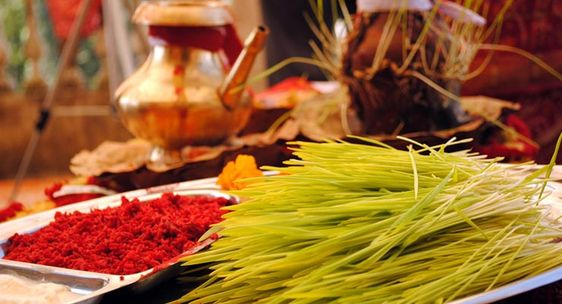
Dashain
Dashain is the biggest Hindu festival in Nepal, celebrated with great joy and devotion. The last Purnima of the month of Bhadra (around the middle of September) is the origin of this festival. Throughout the festival, we have prayers and offerings to Durga, the Universal Mother Goddess. Festival of Nepal Great harvest Ceremony, Dashain is a time to love and reunion of the family, from gift exchanging and blessing and elaborate puja. Dashain glorifies Maa Durga, whose shakti or strength is an amalgamation of all the Gods that took of their weapons for stacking her with the power to fight.
Goddess Durga is depicted as a brave warrior who possesses the courage and strength to quell devotees’ destructive impulses and misbehaviour. Hence, she is worshipped and sacrificed to to draw good fortune and general well-being. As the festivities arise, people arrive in droves at however many river junctions and sacred temples, first thing in the morning and in the evening hours. Ghatasthapana, MAhaaastami, Nawami, and Vijaya Dashami come in a chain as Dashain events each of which is associated with a different set of rituals to be followed in the course.
Meanwhile, people who still ascribe colors to gender roles come to pay a visit to their elderly relatives with adornments of red outfits garnished with tika (a dab of red vermilion mixed with yogurt and rice) for blessings. Upper level and lower level procession rituals are seen in different streets around the Kathmandu valley. The different schedule of these processions are performed in different streets around the valley depending on the locality. Literally thousands of animals are ritually sacrificed in Hanuman dhoka on New Moon day and many are present concurrently via invitation or visiting.
Another amazing fact of the festival is the opening of the Taleju Temple on the ninth day, which is next to impossible on other days. After this day, the moon turns into its fullness, this is popularized as Kojagrat Purnima. New dresses, decorating homes, colourful festival with grand feasts, kite flying and days of a village carnival are the hallmark of Dashain. During this regime, a majority of the population of Kathmandu headed home to different corners of the country and the city became almost inhabited.
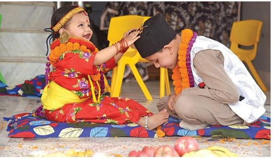
Tihar
Tihar, also known as Deepawali or the festival of lights, is a five-day Hindu festival celebrated in Nepal. Each day of Tihar has its own significance and rituals, starting with Kag Tihar (worship of crows), Kukur Tihar (worship of dogs), Gai Tihar and Laxmi Puja (worship of cows and goddess of wealth), Govardhan Puja (worship of oxen), and Bhai Tika (worship of brothers).
During Tihar, houses and streets are decorated with colorful lights, oil lamps (diyas), and rangolis. It is a time of joy and festivities, where families come together, exchange gifts, and enjoy various traditional delicacies.
In Nepal, the Hindu community celebrates Tihar, sometimes called Deepawali or Yamapanchak, with great fervour and devotion. Each of the five days has its own special meaning and customs. The celebration starts with Kaag Tihar, which honours crows as Yama's messengers, and ends with Kukur Tihar, which is a day to thank dogs for their friendship and devotion. Worshipping cows and the goddess Laxmi on the third day, Gai Tihar and Laxmi Puja, is a way to attract wealth and success. The fourth day is celebrated with two pujas, Maha Puja and Goru Puja, which honour self-worship and agricultural success, respectively. Lastly, Bhai Tika, which is celebrated on the fifth day, fortifies the sibling tie and represents love and family harmony. Tihar is a time for bright decorations, customary ceremonies, delectable cuisine, and festive get-togethers, reflecting the rich cultural heritage and spiritual values of Nepal.

Indra Jatra
The exciting festival of chariot processions, masked dances, religious enactments, lights, color & Living Goddess Kumari as the center of celebrations.
September's eight-day Indra Jatra celebration is one of the most thrilling and highly anticipated events for the Newar population in the Kathmandu Valley. This also ushers in the month-long autumnal festival season. It all started with the construction of a pine wooden pole in front of the former Hanuman Dhoka Palace at Basantapur Square.
Hundreds of onlookers congregate in Palace Square and on the nearby temples for the pole-raising ritual. Walking through Kathmandu's main streets is a procession with Kumari's chariot, the Living Goddess. Nearly every evening, masked dancers known as Lakhay perform in the streets to the sound of loud drums. The celebration honours the day when Indra descended in human form from heaven in search of a herb.
During Indra Jatra, oil wicks illuminate the shrines and historic palace buildings surrounding Kathmandu Durbar Square on each night. Every night, a portrayal of Lord Vishnu's ten terrestrial incarnations is performed on the platform in front of the Living Goddess shrine. At Indra Chowk, a big picture of Akash Bhairab's head is placed on display in the open, facing his temple. Hanuman Dhoka Palace in the afternoon of the day before the full moon to see the much expected Living Goddess chariot procession and sight the revered tiny Newar girl, Kumari, who has been deified as a representation of Goddess Taleju.
People assemble to observe and pay respects as the Kumari chariot is driven through the narrow lanes of ancient Kathmandu, followed by two other smaller chariots carrying the figures of Ganesh and Bhairav. After religious rituals, the (lingam) pole holding Indra's flag is lowered to mark the end of the celebration of Indra Jatra.
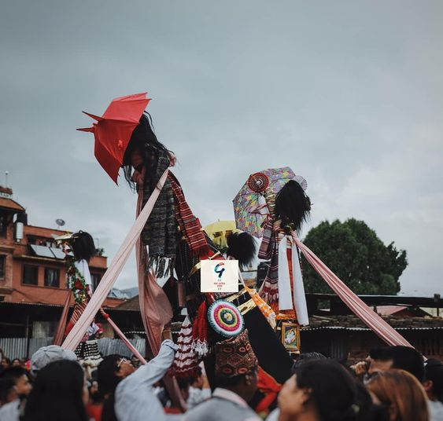
Gai Jatra
The celebration of Gai Jatra is one of joy, laughter, dancing, and singing. In the Kathmandu Valley, people memorialise loved ones' deaths by celebrating the festival of cows. Families of the deceased from the previous year send individuals, mainly kids, to parade through the streets dressed as cows as part of the festival.Typically, July or August see the celebration.
Gai Jatra is a time to both soothe the pain and remember the departed. In English, the word "Gai" signifies cow. In Hinduism, the cow is considered the goddess of riches. The real purpose of this celebration is to share grief and find solace in the knowledge that their loved ones are safe.
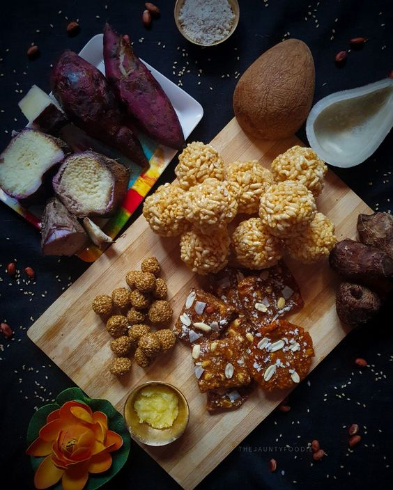
Maghe Sakranti
Maghe Sakranti, also known as Makar Sankranti, is a significant festival celebrated in Nepal and other parts of South Asia, marking the end of the winter solstice and the beginning of longer days. According to the Hindu calendar, people celebrate Maghe Sankranti on the first day of Magh. People of Magar community and Tharu community enjoy this festival.
A primary Maghe Sakranti custom is bathing in sacred rivers, particularly those that converge at Devghat, Triveni, and Sankhamul. It is said that doing this will atone for sins and bring wealth. On this day, people also pray to Lord Vishnu, the Hindu deity of preservation.
Eating traditional foods like yam, taro root, chaku (molasses), and sesame seeds is another important part of Maghe Sakranti. These foods are seen as lucky and are thought to give you energy and warmth throughout the chilly winter months.
The festival signifies the transition from winter to spring, renewal of life, and the harvest season's onset, making it a time of joy and celebration in Nepalese culture.

Udhouli Ubhouli
Celebrated to worship the land and the nature with a ‘Seuli’
UDHOULI and UBHOULI are the most important festival of kirats. These celebrations are referred to as FOLSADAR to Sunwar Rais, SAKELA or SAKENWA to Bantawa and other Rais, CHASUWA to Yakkha Rais, and CHASOK to Limbus. During this festival, a variety of traditional instruments are played for dancing, including the drum, cymbal, yak tail, and shoddard. Every year, there are two celebrations: UBHOULI is celebrated for 15 days in April and May, and UDHOULI is observed for 15 days in November.
Ubhouli festival is celebrated by Kirat, Rai and Limbu during the season of farming in the month of April/May. Worshipping the land and the natural world with a "Seuli"—a little branch covered in leaves—is a cherished tradition. Ubhouli is celebrated on Bhaisakh Sukla Purnima each year. It falls on the same day as Bhuddha Jayanti or Purnima. The animals and birds that migrate back to the cooler northern highlands and mountains are what Udhauli literally means. The term "unbhouli," which means "upward movement," originated with the migration towards the north. Festivals demonstrate the relationship between people and the natural world.
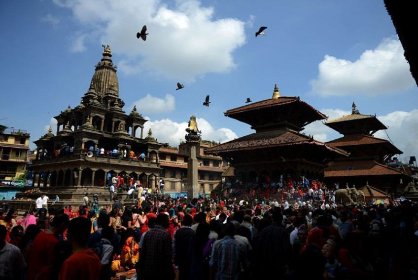
krishna Janmashtami
Krishna Ashtami is the celebration of Lord Krishna's birthday. Krishna, the dark-skinned deity worshipped as a manifestation of Lord Vishnu, who in the Bhagwad Gita taught warrior Arjuna the importance of Karma, was born at midnight on August 8th, the day of the dark moon known as Ashtami.
Devotees swarm to Krishna temples around Nepal to commemorate this well-known Hindu god's birthday; the hub of festivities is the Krishna Mandir in Patan Durbar Square, Kathmandu Valley, where throngs of devotees congregate late into the night to pay respects. Numerous devotees flock to the temple to pray and give sacrifices even during the day.
There are also processions carrying images of Lord Krishna around the city, accompanied by happy groups of devotees and musical ensembles. People hang framed photos of Krishna that depict different moments from his extraordinary life throughout the narrow streets of ancient Kathmandu.
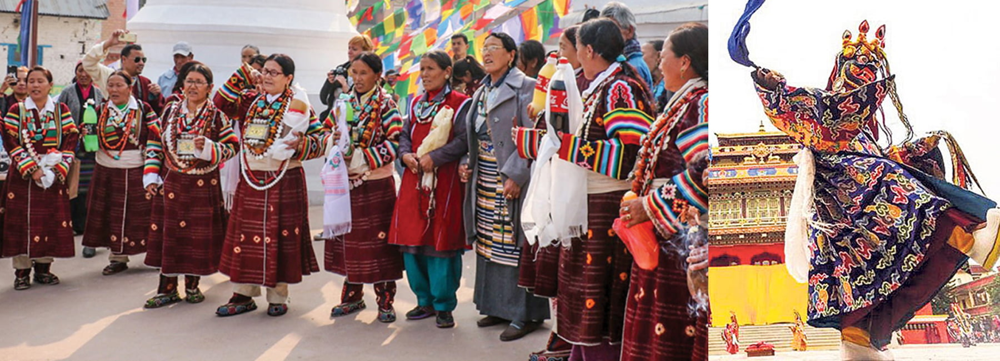
Losar
The Losar festival is celebrated with a grand procession that is surprisingly more important in certain highland communities. Since most mountainous ethnic tribes in Nepal—Sherpas, Gurung, Tamang, Thakali, and others—celebrate the Losar Festival with great significance, it is frequently referred to as the festival of highlanders.
The twelve-year cycle that the festival follows is commonly referred to as "Lohokor." The unique nomenclature for each year is represented by the first two letters "Lo" in Lohokor. Various animal species, including mice, tigers, cows, garudas, serpents, cats, horses, sheep, birds, dogs, monkeys, and deer, are used to symbolise the years. Animal cycles are arranged according to a cloth since this has been a customsince the ancient times which is associated with the calculation of the year.
Nepal celebrates 3 types of Losar festival.
Tamu Losar, "Gurung" is also referred to as "Tamu," and Gurung populations in Nepal commemorate Tamu Losar on this day. The primary celebration for Gurung communities is this one. The Tamu Sambat, or Gurung Calendar Year, begins with the Tamu Losar event. Every fifteen Poush, or December/January in the Nepali calendar, is Tamu Losar. The Gurung community gets together on this day each year to joyfully celebrate the festival. They participate in rallies, eat various traditional foods, dance, and sing.
Losar Sonam, The Tamang people of Nepal commemorate Sonam Losar. Sonam Losar has distinct cultural and religious values from Tamu Losar and Gyalpo Losar. Sar signifies new or fresh, and Lho denotes year or age. Losar signifies the start of a new year or an era. The first day of the new moon, or the day after the day of the no moon in the month of Magh, is when the Tamang people celebrate the start of a new year (Magh Shukla Pratipada).
Gyalpo Losar, The Sherpa community in Nepal is the primary celebrant of the Gyalpo Losar festival. who resides in the higher Himalayan region, where Tibetan culture has a strong effect. At this celebration, people from the Tamang, Butia, and Yolmo communities also participate. Every place and every community has a unique celebration style.
 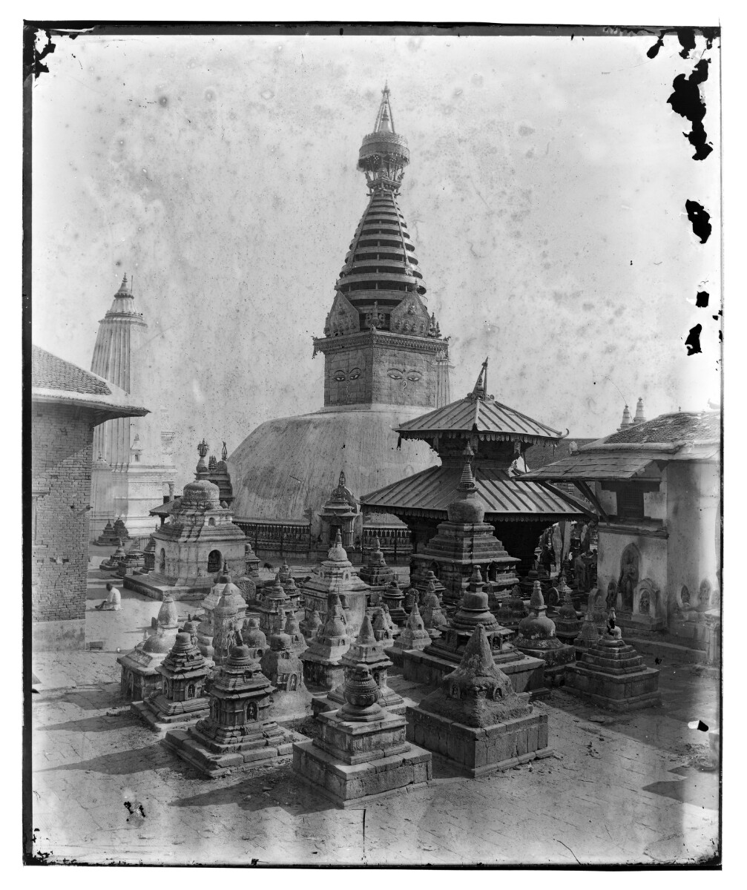
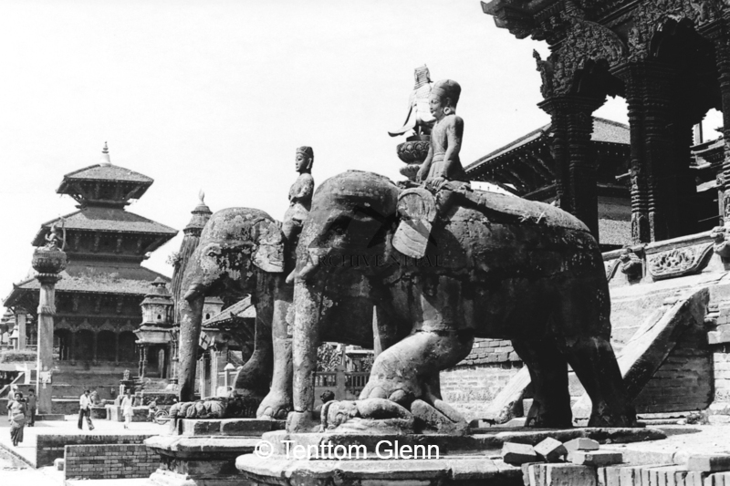
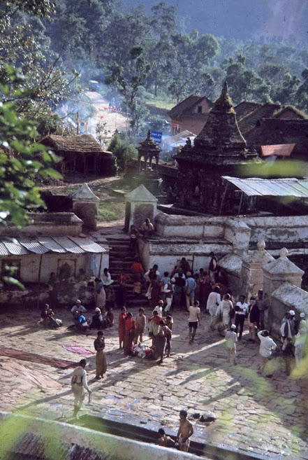
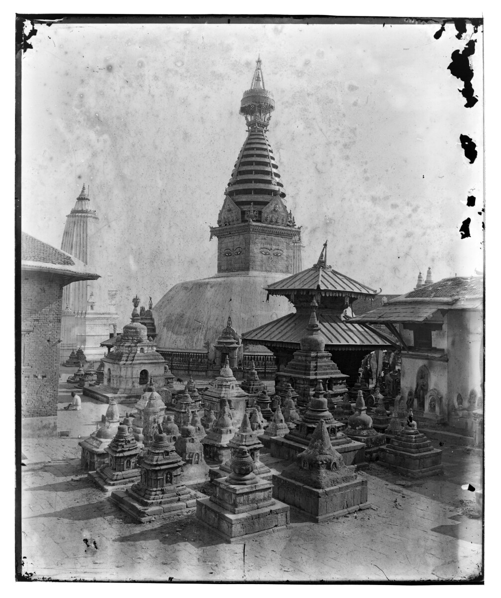
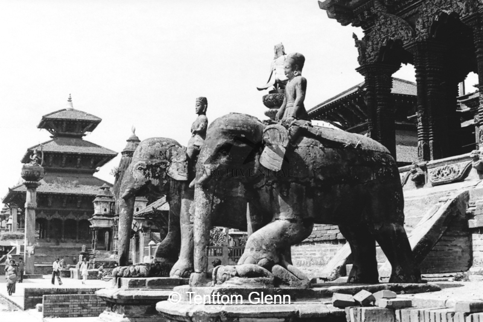
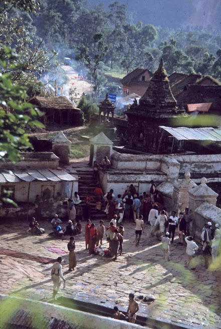